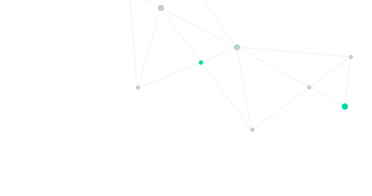

+7 (499) 648-03-25
Аппарат для гипотермии ALLON


ALLON используется для защиты головного мозга после ишемии. Защитный эффект включает несколько компонентов:
CritiCool – это оптимальное решение для быстрого начала ALLON

Интуитивная и простая настройка температуры
Удобная и эффективная конструкция костюмного типа для обертывания
MTRE Advanced Technologies Ltd.
Израиль